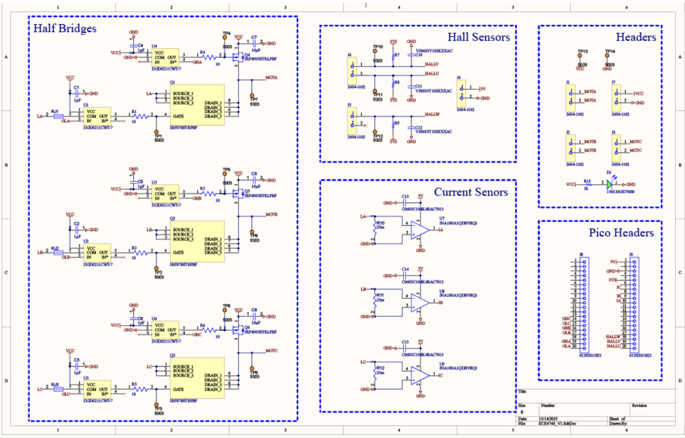
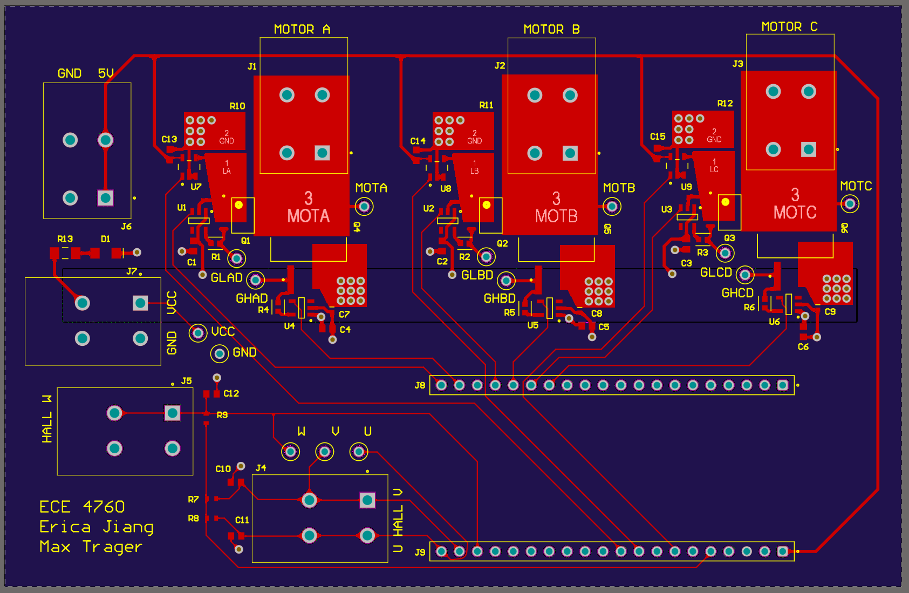
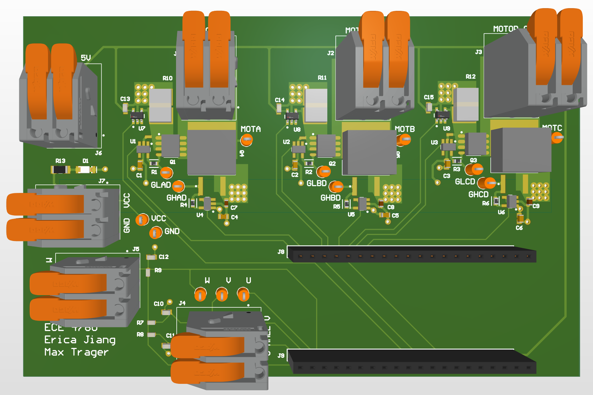

Appendix
Appendix A - Permissions
The group approves this report for inclusion on the course website.
The group approves the video for inclusion on the course YouTube channel.
Appendix B - Extended Demo Video
An extended demo video can be found here, on Hunter's Youtube channel!
Appendix C - C Program
A zip file with our code can be downloaded by clicking here.
Appendix D - PCB Schematic & Layout
Figure 7. PCB Schematic
Figure 10. Full PCB Layout.
Figure 11. 3D Visualization of PCB.
Appendix E - References
PCB components
- See BOM
Example code
- Raspberry Pi PIO PWM example, © 2020 Raspberry Pi (Trading) Ltd.
Website
- The high-level structure of this website was based on Ball Balancer, an ECE 4760 project from Spring 2025.
References
- B. Akin, M. Bhardwaj, and J. Warriner, “Trapezoidal Control of BLDC Motors Using Hall Effect Sensors,” Texas Instruments, 2011.
- “DRV835x 100-V Three-Phase Smart Gate Driver,” Texas Instruments, 2019.
Appendix F - Work Distribution
Erica led the electrical hardware development, including circuitry, PCB design, soldering, and current sensing, as well as the commutation logic and implementation. Max primarily handled software development, including the V/Hz algorithm, PIO state machine implementation, user input, and sensor filtering. System debugging, testing, and iterative fixes were conducted collaboratively.